VW Passat
Silnik: 1.8 TSI (180 KM) 7-Automat
Lakier: biały
DOSTĘPNY OD RĘKI – szukasz innej wersji? Zadzwoń!
✔ Samochód krajowy
✔ Książka serwisowa
✔ Forma finansowania: kredyt
Cena: 58 000 PLN
Miesięczna rata już od 345 PLN*
Zainteresowany? Zadzwoń, nawet w niedzielę i święta!
OPIS POJAZDU:
Ten Volkswagen Passat pochodzi z Polski i jest wyposażony w efektywny silnik benzynowy 1.8 TSI o pojemności 1798 cm3 i mocy 179 KM. Posiada automatyczną skrzynię biegów oraz elektroniczną książkę serwisową, co ułatwia dostęp do historii serwisowej pojazdu. Passat oferuje przednie światła LED, które poprawiają widoczność. Fotele są podgrzewane, co zwiększa komfort w chłodne dni. Automatyczna klimatyzacja pozwala na łatwe utrzymanie odpowiedniej temperatury. Kierownica jest skórzana, wielofunkcyjna i wyposażona w łopatki zmiany biegów. Dodatkowo, Bluetooth umożliwia wygodne połączenie z urządzeniami mobilnymi.
Volkswagen Passat Combi to przestronny i komfortowy samochód idealny dla rodzin. Oferuje zaawansowane systemy bezpieczeństwa oraz bogate wyposażenie w konkurencyjnej cenie.
PARAMETRY TECHNICZNE:
• Rok produkcji: 2017
• Przebieg: 150 166 km
• Paliwo: benzyna
• Nadwozie: Kombi
• Miejsca siedzące: 5
• Przegląd techniczny: ważny do 04/2026
DODATKOWE WYPOSAŻENIE:
poduszki powietrzne
światła do jazdy dziennej
alarm
asystent hamowania przed przeszkodą
elektryczne fotele
wspomaganie wjazdu pod górę
mocowanie fotelików dziecięcych isofix
zamek zbliżeniowy
uruchomianie zbliżeniowe
wielofunkcyjna kierownica
nawigacja
elektryczne lusterka
EPS
elektryczne szyby
kamera cofania
relingi dachowe
radio samochodowe
koło zapasowe
klimatyzacja automatyczna
ABS
tempomat adaptacyjny
fabryczne alufelgi
ASR
przyłącze bluetooth
zamek centralny
komputer pokladowy
elektryczny hamulec ręczny
ESP
światła przeciwmgielne
podgrzewane fotele
światła do jazdy dziennej LED
tylne światła LED
czujnik deszczu
system Stop Start
kontrola ciśnienia opon
łącze USB (audio)
FINANSOWANIE I GWARANCJA:
• Kredyt dostępny na każde auto – decyzja w 1 dzień!
• Leasing dla firm – procedura uproszczona!
• Dożywotnia gwarancja legalnego pochodzenia pojazdu!
• Program "10 dni na wymianę auta bez podania przyczyny"!
• Ubezpieczenie Carlife – ochrona mechaniczna do 36 miesięcy!
Lokalizacja pojazdu jest aktualna na dzień wystawienia ogłoszenia.
Przed przyjazdem prosimy o kontakt telefoniczny w celu potwierdzenia dostępności i umówienia wizyty. Na życzenie dostarczymy auto do najbliższego salonu.
DZWOŃ CODZIENNIE OD 8:00 DO 21:00 – NAWET W WEEKENDY I ŚWIĘTA!
AAA AUTO – największy dealer samochodów używanych w Europie Środkowej! * Reprezentatywny przykład kalkulacji kredytowej: Samochód Ford Focus rocznik 2020, cena samochodu 55000 zł, wkład własny 30% (16500 zł). Całkowita kwota kredytu konsumenckiego 38 500 zł, 60 miesięcznych rat równych po 826,18 zł. Okres obowiązywania umowy: 60 miesięcy. Oprocentowanie stałe w skali roku: 9,29%. Rzeczywista roczna stopa oprocentowania: 9,29%. Całkowita kwota do zapłaty: 49570,8 zł. Całkowity koszt kredytu: 11071,08 zł (w tym prowizja za udzielenie kredytu 770 zł, odsetki 10301,08 zł). Przyznanie i warunki kredytu zależą od pozytywnej oceny zdolności i wiarygodności kredytowej. Niniejsze ogłoszenie ma charakter informacyjny i nie stanowi oferty handlowej w rozumieniu art. 66 § 1 Kodeksu Cywilnego.
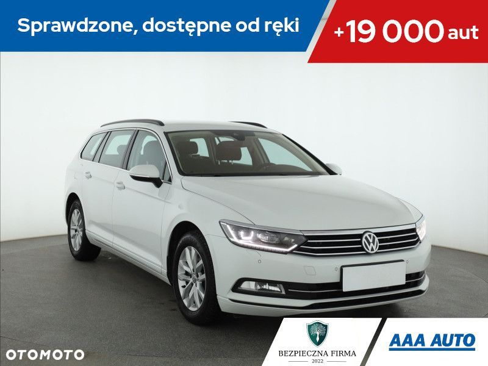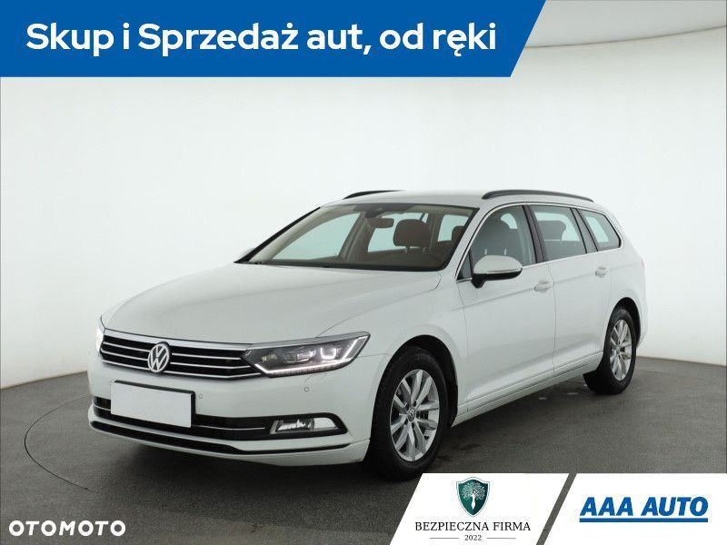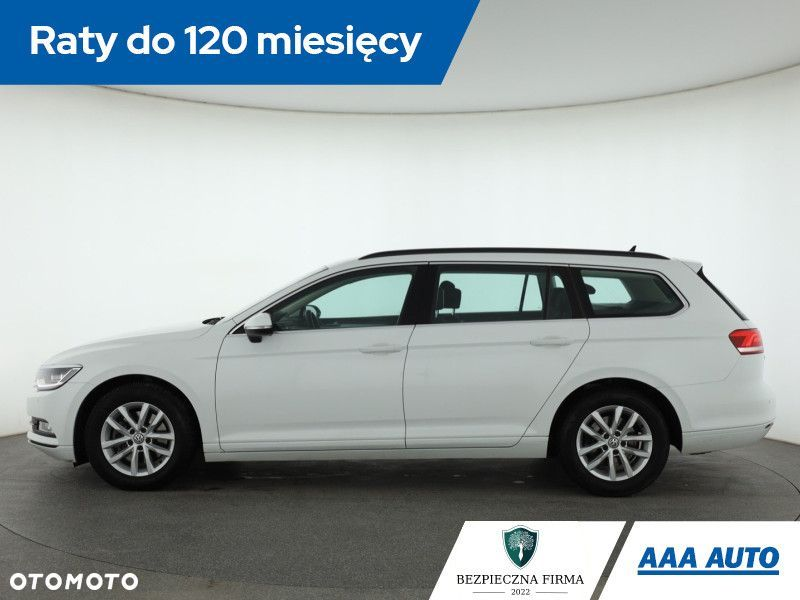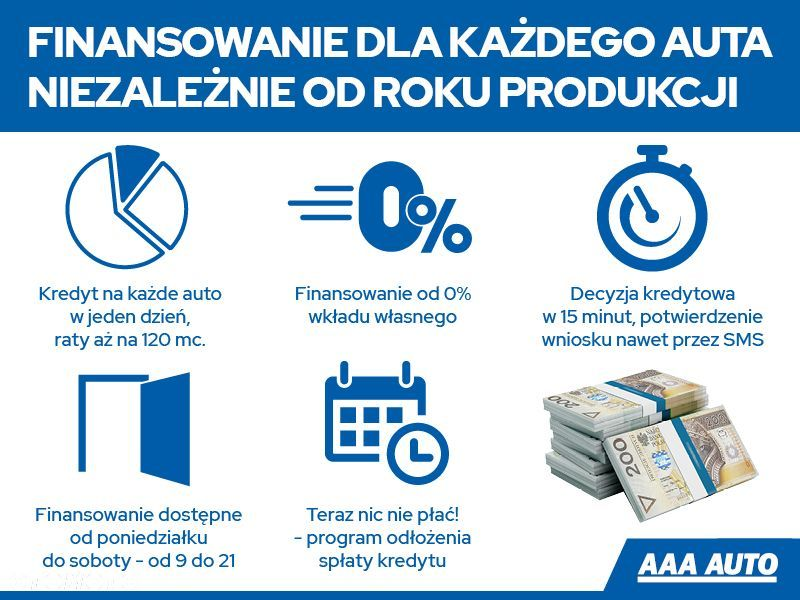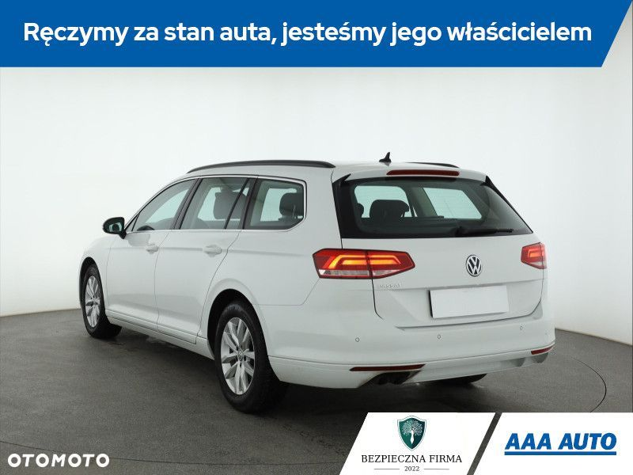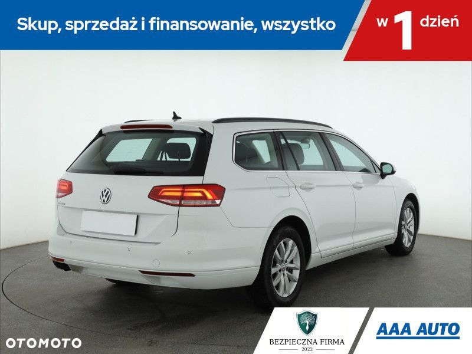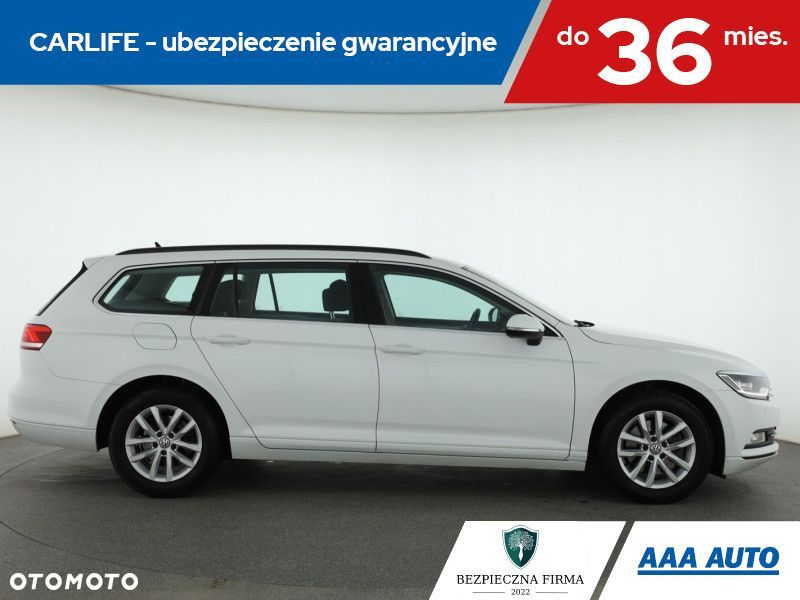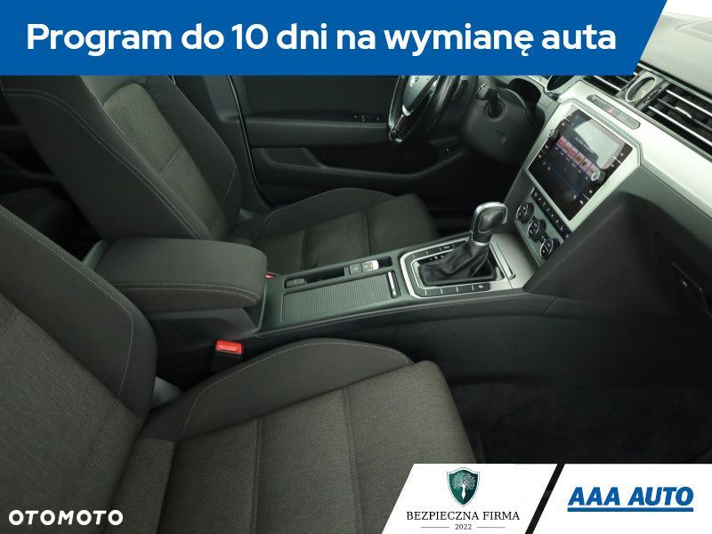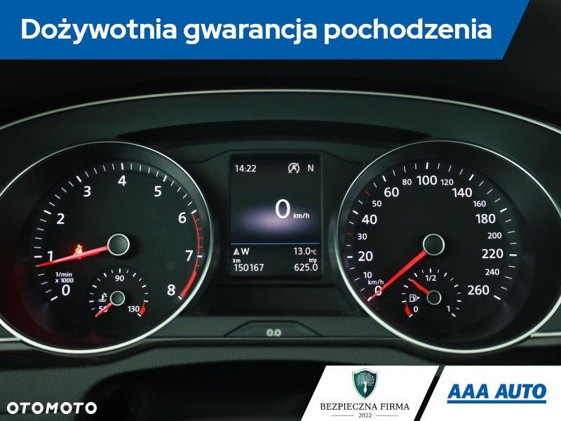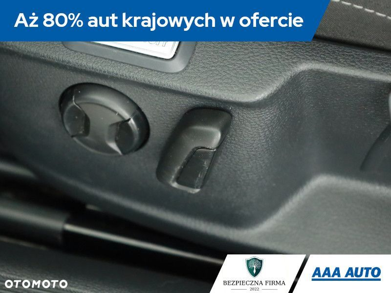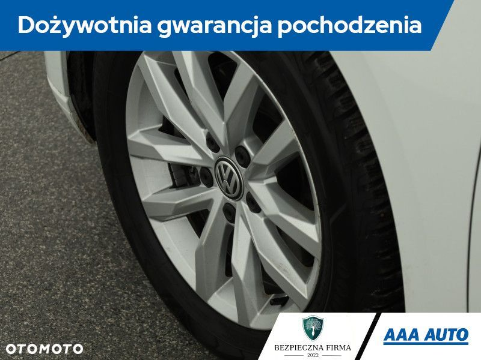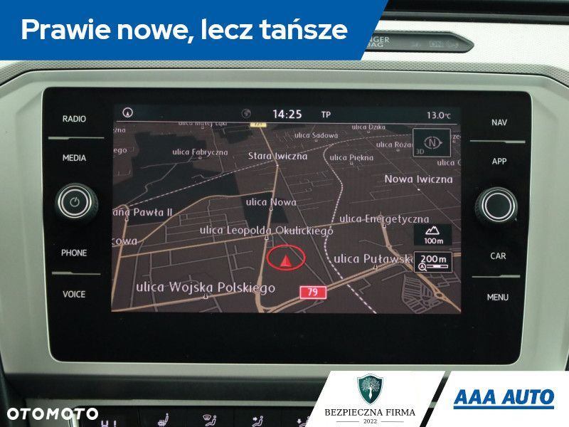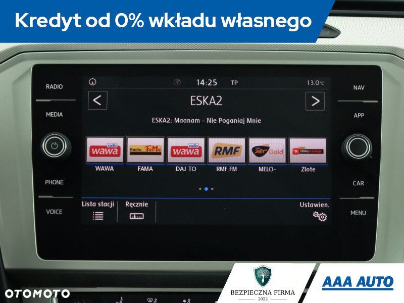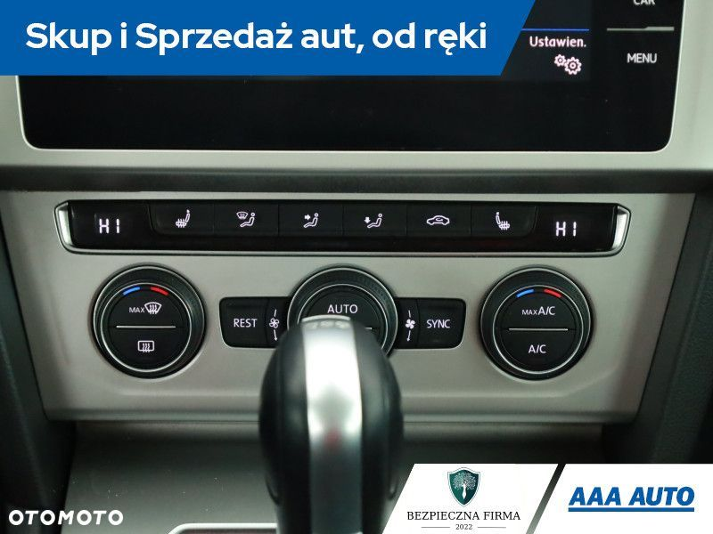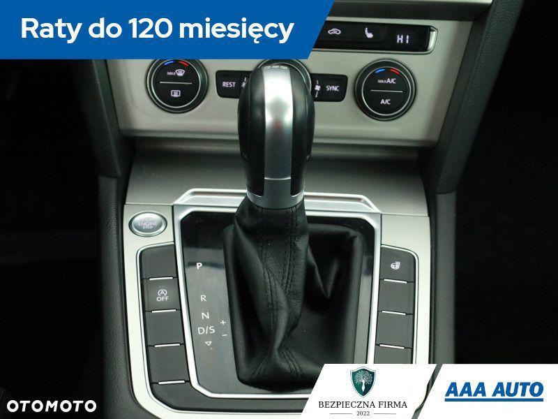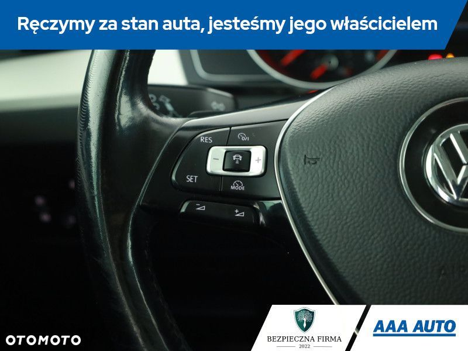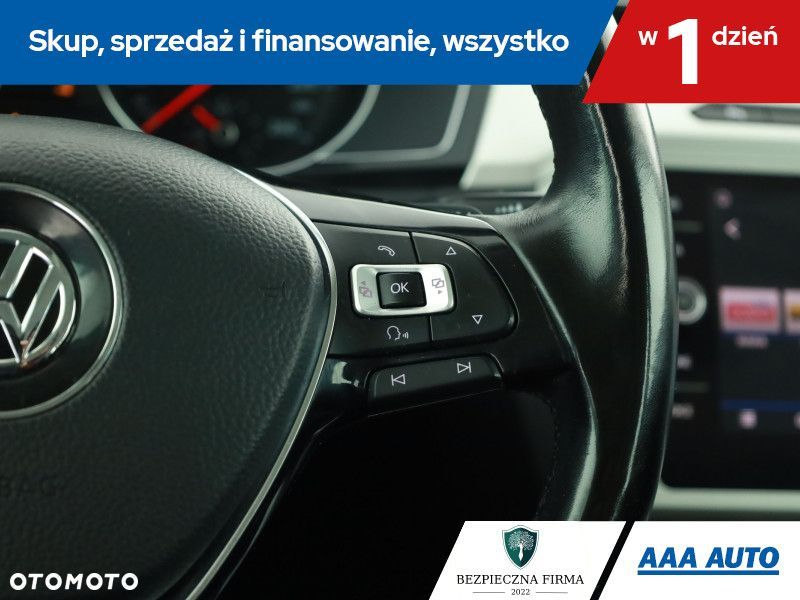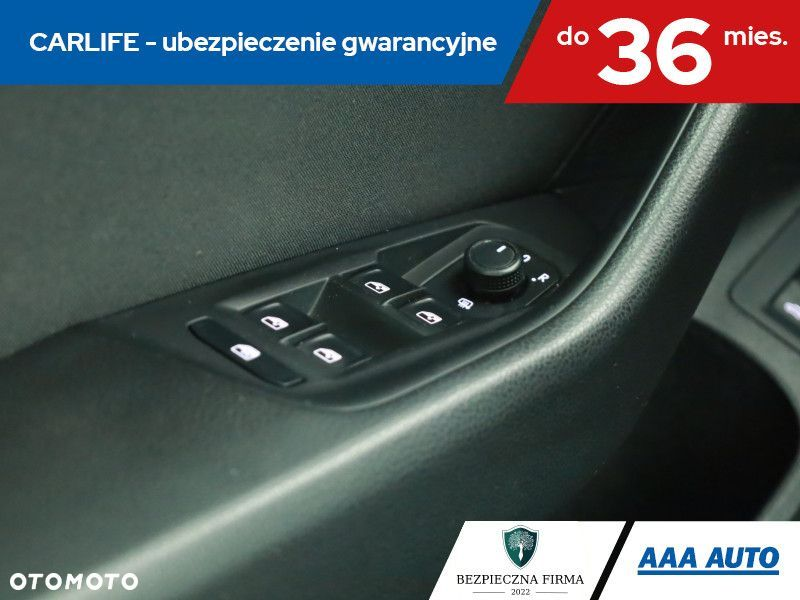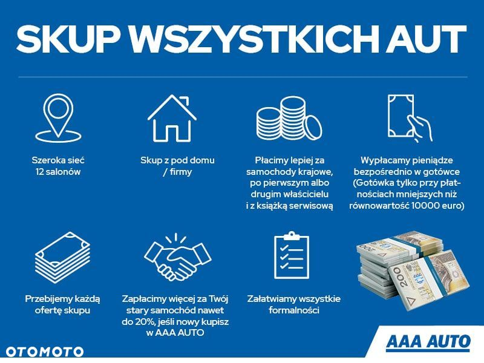